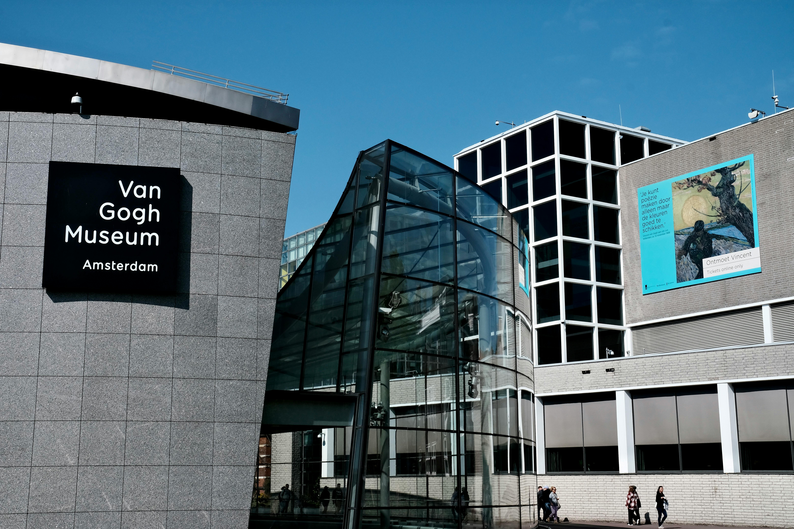
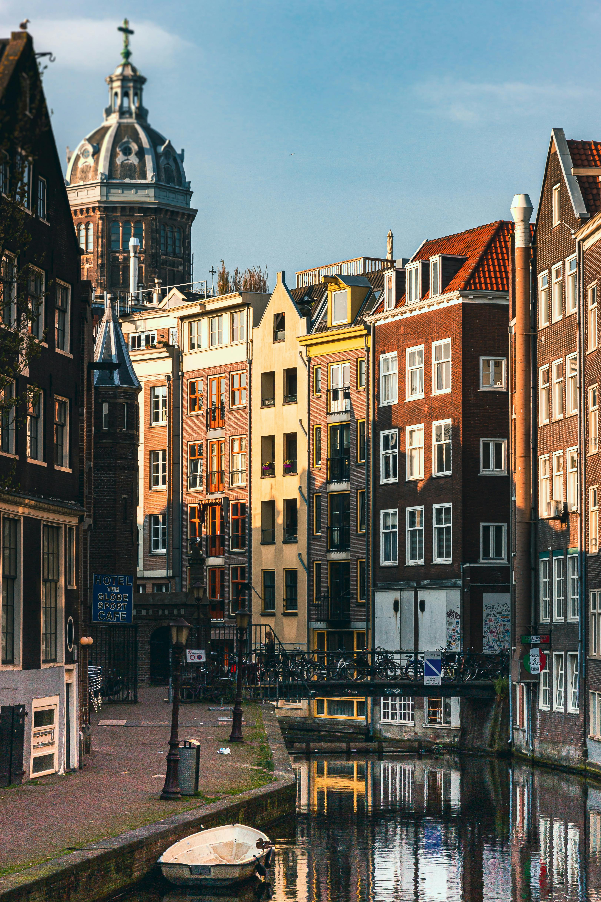
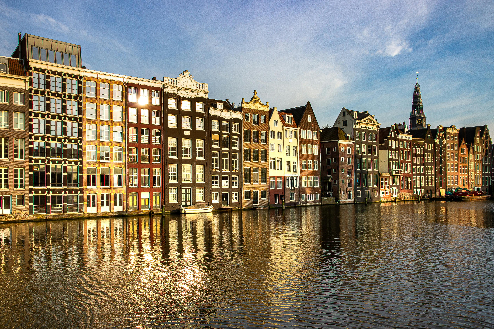

Ámsterdam, la capital de los Países Bajos, es una ciudad vibrante y diversa conocida por sus encantadores canales, arquitectura histórica y cultura liberal. Con una rica historia que se remonta al siglo XII, la ciudad ofrece una combinación única de tradición y modernidad. Los emblemáticos canales, bordeados por casas estrechas y altas, crean una imagen pintoresca y única que caracteriza a Ámsterdam. La ciudad es famosa por sus museos de clase mundial, como el Rijksmuseum, el Museo Van Gogh y la Casa de Ana Frank, que ofrecen una visión fascinante de la historia y la cultura de los Países Bajos. Además, Ámsterdam es conocida por su ambiente tolerante y diverso, con una próspera escena artística, una variedad de restaurantes internacionales y una vida nocturna animada.
Lugares turisticos en Ámsterdam
Museo Van Gogh

El Museo Van Gogh, ubicado en Ámsterdam, Países Bajos, es una institución dedicada a la vida y obra del famoso pintor postimpresionista Vincent van Gogh. Es hogar de la mayor colección de obras del artista en el mundo, incluyendo pinturas como "Los Girasoles", "La habitación en Arlés" y "Autorretrato con oreja vendada". Además de exhibir una amplia gama de pinturas, el museo también ofrece exposiciones temporales sobre otros aspectos de la vida y obra de Van Gogh, así como de sus contemporáneos. Es un destino imprescindible para los amantes del arte y la cultura que visitan Ámsterdam.
Barrio Rojo (De Wallen)

Conocido por sus luces rojas y su vida nocturna, el Barrio Rojo es una atracción intrigante para muchos visitantes. Además de los escaparates de las trabajadoras sexuales, la zona cuenta con bares, cafeterías y tiendas.
Canal Ring

El Canal Ring, también conocido como Grachtengordel en neerlandés, es un distrito histórico en el corazón de Ámsterdam, Países Bajos. Este área es famosa por sus hermosos canales concéntricos que forman un anillo semicircular alrededor del centro de la ciudad. Construido durante el Siglo de Oro neerlandés en el siglo XVII, el Canal Ring es un ejemplo sobresaliente de planificación urbana y arquitectura del período. Los visitantes pueden explorar los canales a pie, en bicicleta o en un paseo en barco, disfrutando de las vistas de las elegantes casas señoriales, puentes históricos y encantadores barcos anclados a lo largo de los canales. Esta área ha sido designada como Patrimonio de la Humanidad por la UNESCO debido a su importancia histórica y cultural. Es una de las atracciones más emblemáticas de Ámsterdam y ofrece una experiencia única y pintoresca para los visitantes.
Casa de Ana Frank
Situado en la casa donde Anne Frank y su familia se escondieron durante la Segunda Guerra Mundial, este museo ofrece una visión conmovedora de la historia y el diario de Anne Frank, así como del Holocausto en general.
Itinerario en Ámsterdam: 5 días y 4 noches
Día 1: Llegada y Museo Van Gogh
Llegada a Ámsterdam y registro en el alojamiento.
Por la tarde, visita al Museo Van Gogh para explorar la impresionante colección de obras del famoso pintor.
Disfruta de una cena en uno de los restaurantes cercanos al museo.
Día 2: Barrio Rojo (De Wallen)
Por la mañana, visita el Barrio Rojo (De Wallen) para explorar esta área histórica, famosa por sus luces rojas y su vida nocturna.
Aprovecha para conocer la arquitectura y la historia del barrio.
Por la tarde, visita algunos de los cafés, tiendas y bares únicos del área.
Cena en un restaurante en el Barrio Rojo o en otra parte de la ciudad.
Día 3: Canal Ring
Dedica el día a explorar el Canal Ring, declarado Patrimonio de la Humanidad por la UNESCO.
Realiza un recorrido en barco por los canales para obtener una perspectiva única de la arquitectura y los monumentos a lo largo del agua.
Haz paradas en puntos de interés como la Casa de Ana Frank y otras atracciones cercanas a los canales.
Disfruta de una cena en un restaurante a lo largo de los canales.
Día 4: Museo Anne Frank
Por la mañana, visita el Museo Anne Frank para aprender sobre la vida de Anne Frank y su familia durante la ocupación nazi.
Dedica tiempo a explorar la casa y a leer el diario de Anne Frank.
Por la tarde, explora los alrededores del museo, incluyendo el encantador barrio de Jordaan.
Cena en un restaurante en Jordaan o en otra parte de la ciudad.
Día 5: Últimas visitas y partida
Dedica la mañana a hacer algunas últimas visitas a lugares que te hayan quedado pendientes o a hacer compras de recuerdos.
Dependiendo de tu horario de vuelo, aprovecha para disfrutar de un almuerzo en un café local.
Dirígete al aeropuerto para tu vuelo de regreso.
Costo Estimado del Viaje
Alojamiento (4 noches): €800
Comida y bebida: €400
Transporte (incluyendo pases de transporte público y taxi): €100